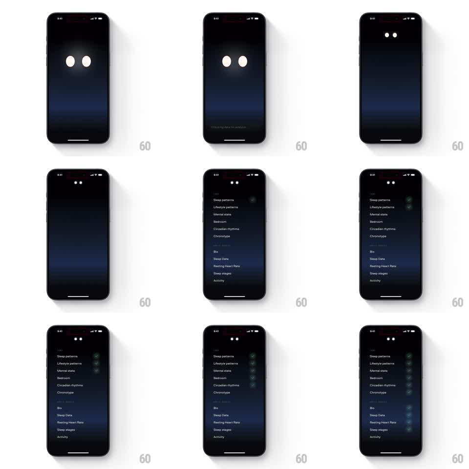

Media
Frame-by-frame

Rebuild this animation 1:1: Remy AI's analysis checklist - the mascot's glowing eyes shrink into a header while a two-section checklist appears and its checkmarks light up row by row.

Rebuild this animation 1:1: Remy AI's analysis checklist - the mascot's glowing eyes shrink into a header while a two-section checklist appears and its checkmarks light up row by row. ## Integration Integration: stack-agnostic spec - springs given as stiffness/damping, timed motions as duration + curve; map every value to your framework and animation library of choice. ## Scene A dark screen with the Remy mascot's two glowing white oval eyes centered, and a small "Checking data for analysis" status. Then a checklist under a section header: rows like Sleep patterns, Lifestyle patterns, Mental state, Bedroom, Circadian rhythms, Chronotype, then an Apple Watch section (Bio, Sleep Data, Resting Heart Rate, Sleep stages, Activity), each row with a checkmark circle on the right. ## Motion spec Pattern: mascot-to-header shrink with staggered checklist, ~3s. - The eyes hold center for 800ms, then shrink and drift to the top as a small header mark (500ms, ease-in-out), the status text fading out. - The checklist rows fade and rise in as two sections (300ms, section two 150ms after section one). - Checkmarks fill in top to bottom, one every 180ms: each circle draws its ring, then the check strokes in with a brief green glow (200ms per row). - After the last row checks, the glow settles and the list holds complete. ## Calibration - The eyes' move to the header is one continuous shrink-and-travel, not a fade swap. - Check cadence is brisk and even - a machine working through a list. ## Reduced motion List appears fully checked. ## Don't miss - The checkmark glow flashes once on landing, then calms. - The two sections (profile inputs, then Apple Watch data) have distinct headers.